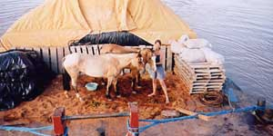

Brazil, Manaus : 12th March 2003
A lot of water had gone into the sea since our last correspondence and I feel that I have to break some very sad news to your first….
My big pal Tusa, companion, friend and kindred spirit for 9 months was diagnosed with the dreadful virus, Equine Infectious Anaemia (EIA) and had to put down a week ago. It is still hard for Miss M and I to talk about what had happened but for the sake of our travels and everything that is involved, we know that we have to continue and keep on looking forward. Tusa wouldn´t have wanted it any other way.
So although still with sad hearts at Tusa´s departure from this world, we continue to stay positive and committed to what the three of us had started 9 months ago. And Tusa might be buried here in Manaus but in spirit he will be with us… all the way. A big thanks to each and everybody for their wonderful mails about Tusa and for encouraging and supporting Miss M and I.
Tusa finished our last update, telling that we had found a boat in Porto Velho that will take us all the way to Manaus, deep in the heart of the Amazon. We had no choice about this means of transport as everybody travels by boat, whether they like it or not! Miss M realized very quickly that it was a blessing in disguise that we went on a Cargo boat instead of the traditional passenger ones, as this meant hardly any other travelers accompanying us, which was great! Excluding Tusa and I, there was a four strong crew (the captain, his assistant, the maintenance man and his wife, the cook), a Brazilian Missionary and his son and, of course, Miss M.
Tusa and I had a little spot on a huge barge where we shared the space with hundreds of bean bags and packets of spaghetti, 3 cars and Miss M´s pitched tent. The barge was pushed by a small boat and during the day, Miss M sat on the little deck in her chair (especially acquired for this trip), reading, trying to improve her Spanish (although everybody else around us spoke Portuguese!) and playing her Irish flute (still badly I am afraid to say!).
Apart from keeping a watchful eye over us, she also fed us regularly with food and water, scooping the latter from the river with a bucket and long rope. She also cleaned our living space round the clock, which made us (and everybody else on board) very happy! In Porto Velho she managed to secure twelve bags full of saw dust, so at least Tusa and I had a comfortable stand and at night we usually lay down on our comfy bed. Our food consisted of a mixture of nutrients that come in a bag and whenever the boat veered to the side, everybody enthusiastically helped to grab and pull juicy, green reeds for us to munch on. It was overcast most of the time but one day it got very hot and Miss M suggested that they use some of the plastic to make a roof for us. A strong wind was blowing and Tusa and I got quite scared with all this plastic flapping very noisily over our heads and I think Miss M feared at one stage that we were going to jump into the river! Once the plastic roof was secured, it was quite cosy underneath and it made a huge difference not to have had the piercing sun, burning onto our skin.
I got a bit restless by the 5th day and was quite relieved when I saw the lights of Manaus in the distance, a day later. I had a little accident coming off the barge, slipping on the metal surface with my shod feet, falling flat on my side. Miss M then had the brainwave (because I really struggled to get up) to put plastic bags around my hoofs, so I finally managed to get up on my four feet again after some time.
Miss M had a contact here in Manaus, a girl called Tammy, and she and her partner Johnny, were such a great help to us all. Tammy arranged that we were transported from the port in style by a fancy truck from the Military Police to her and Johnny´s farm. It is also here where Tusa is resting now. Miss M planned on a 3-day stay in Manaus but it turned out to be much longer as we had to be tested for Mormo (a very serious disease for horses here in the Amazonas) and EIA, which poor Tusa diagnosed positive for. The blood tests for Mormo had to be sent to Sao Paulo (which is almost on the other side of the world!) and when Tusa´s results came back as inconclusive, the procedure had to be repeated again.
But, our luck had to turn and we finally leave tomorrow, heading towards the Venezuelan border. Our new companion is called Tu Fein (it means ´yourself´in the Irish language). Thanks Mr Coman for coming up with such an appropriate name!! He (Tu Fein and not Mr Coman!), is half Criollo, half Quarter Horse, with a good energetic walk. I´ve met my match here because everytime we´ve been together so far, he has tried to nip me but I am sure our relationship will smooth out as time goes on.
I will give Tu Fein a chance for a few words with our next diary entry, which will be from somewhere in Venezuela.
Until then my friends!
As usual I forget to mention the most important stuff till last! Miss M was very impressed with the services of DHL who recently got a parcel from Dublin to Manaus in 3 days!! She mentions to us (and everybody else who is prepared to listen!) regularly about this fantastic sponsor and their speedy and professional service. We also want to thank HorseHeaven again for continuing to support the TATA challenge, sending us much needed goodies on a regular basis. Their spray against flies and other biting insects, an absolute winner!! The quality of their products are much admired throughout Latin America!
Last but not least, we´d also like to mention our latest sponsor, Maximuscle, who provides Miss M with protein drinks (Miss M couldn´t stop talking about the chocolate flavour until she tried Strawberry recently!!!) and energy bars, making sure that she can never ever complain again for being hungry or tired!